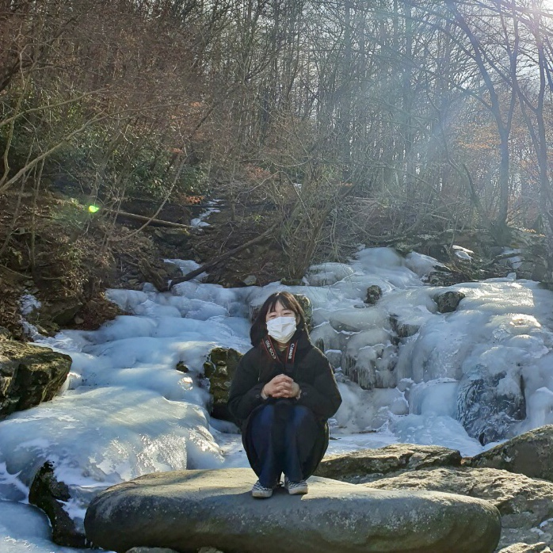
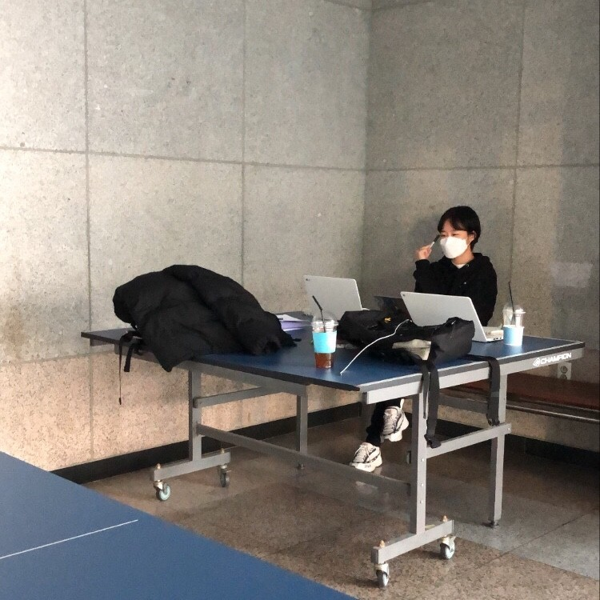

반갑습니다. 맹지홍입니다.
사진 속 이 곳은 3학년 겨울방학 때 놀러간 삼성궁입니다.
부산 사람이라 눈을 잘 보지 못해 얼음이 있는 것만 봐도 즐거웠나봅니다.
사진에서 보이듯, 저는 자연에서 쉬는 것을 좋아합니다.
자연이 주는 힐링 외에도 좋아하는 것이 많은데요..
이 공간을 통해 제가 좋아하는 것, 저의 도전과 커리어 철학을 소개하겠습니다.

저는 사회학과 4학년을 보내고 있습니다.
저의 가장 대학생활 목표 중 하나는
"나 자신이 어떤 사람인지 알기" 입니다.
저는 '나'를 알기 위해
새로운 세계를 접하는 것을 추구합니다.
최근 6개월은 새로운 것을 접하는 시간을 보낸 것 같습니다.
친구들과 처음으로 '독립출판' 을 하였고,
방학동안 '첫 인턴 생활' 을 경험하였습니다.
또, 위코드 양준식 멘토님에게 '웹 페이지 개발' 을 배웠습니다.
추후 지금까지의 경험과 감상을 정리해서 업로드하도록 하겠습니다.
읽어주셔서 감사합니다.